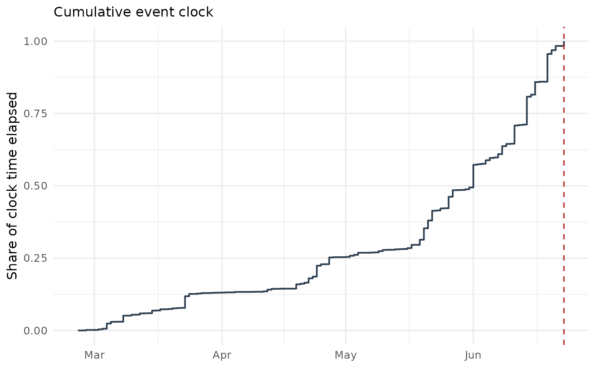

Plots cumulative event-clock time \(\widehat A_t\) against calendar time — the "clock plot": how much of the window's information had arrived by each date.
Arguments
- path
An
event_clock_pathobject fromevent_clock_path()(anevent_pricesobject is converted automatically).- normalize
Logical; plot the clock normalized to \([0,1]\) (default
TRUE) or in raw units ofA.- ...
Unused.
Examples
data(brexit2016)
ep <- as_event_prices(brexit2016, time = "date", price = "q_leave",
event_date = as.Date("2016-06-23"))
plot_clock(event_clock_path(ep))
